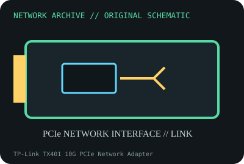

[ MODEL-SPECIFIC NETWORK HARDWARE ]
TP-Link TX401 10G PCIe Network Adapter
Single-port 10GbE PCIe adapter with RJ-45 NBASE-T connectivity. Confirm exact product label and revision before applying specifications.

IDENTIFICATION: Confirm manufacturer PID, hardware revision, device ID or module suffix. Nominal standards/link rates are not measurements of payload performance.
Exact specifications and compatibility
| Dedicated subcategory | Ethernet adapters |
|---|---|
| Exact product/model | TP-Link TX401 10G PCIe Network Adapter |
| Bus, ports and physical interface | PCIe 3.0 x4; single RJ-45 Ethernet port; low-profile bracket included in listed package. |
| PHY, radio or protocol | Marvell AQtion AQC107-family controller; supports 10/5/2.5/1/0.1Gb/s negotiation with matching peer. |
| Nominal rate (not measured) | One port rated up to 10Gb/s PHY link; marketed rate is not tested user throughput. |
| Measured throughput | No measured benchmark is claimed for a physical specimen. A valid result must record host/peer, link partner, media/cable, driver/firmware, traffic pattern, test tool and duration. |
| Drivers, OS and firmware | TP-Link revision-specific Windows drivers; Linux support depends on kernel atlantic driver and card device ID. Firmware/OS matrix varies by revision. |
| Compatibility | PCIe x4 slot, adequate heatsink airflow and suitable twisted-pair cable; confirm card revision and peer rate. |
| Variant warning | TX401 hardware revisions and regional package contents can differ; verify the card label, chipset and vendor ID before using drivers. Not identical to ASUS/other AQC107 boards. |
Model and revision notes
TX401 hardware revisions and regional package contents can differ; verify the card label, chipset and vendor ID before using drivers. Not identical to ASUS/other AQC107 boards.
TP-Link revision-specific Windows drivers; Linux support depends on kernel atlantic driver and card device ID. Firmware/OS matrix varies by revision.
PCIe x4 slot, adequate heatsink airflow and suitable twisted-pair cable; confirm card revision and peer rate.
Archival, ESD and preservation notes
Keep serial, MAC, revision and bracket provenance; avoid static discharge and preserve heatsink airflow.
Document source URL, access date, document revision and specimen label/condition. Preserve without credentials or private configuration.
Primary manufacturer and standards sources
- TP-Link TX401 product specificationsPrimary manufacturer or standards documentation; verify exact SKU and host revision.
- TP-Link TX401 support and downloadsPrimary manufacturer or standards documentation; verify exact SKU and host revision.
- IEEE 802.3 Ethernet standardsPrimary manufacturer or standards documentation; verify exact SKU and host revision.
Manufacturer statements cover the named part or its documented product family; the exact labeled revision and vendor compatibility list take precedence.